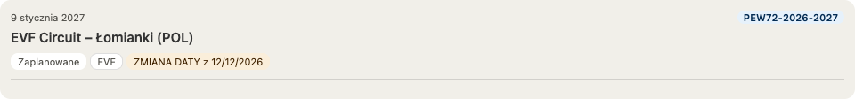

Why this page exists
Purpose
The rules governing enum_status are real, enforced, and spread across five places that never referenced each other: a PL/pgSQL validator, a Svelte visibility filter, a Python promoter, and two ADRs. No page stated them together.
That scattering has a cost. On 28 August 2026 PPW1-2026-2027 was missing from PROD's public calendar while its registration was open with fourteen fencers already entered. The row was present, correctly dated, and reached vw_calendar intact — it was dropped by a frontend filter nobody thought to read while diagnosing a database promotion. This page exists so the next person does not have to assemble the picture from source.
Events and registration owns the subsystem's invariants; ADR-077 owns the decision. This page owns the operational view: what is true now, and what to check when something is not showing.
The vocabulary
What each status means
| Status | Meaning | Set by | On the public calendar |
|---|---|---|---|
CREATED | A childless, usually date-less skeleton created when a season is provisioned. | fn_init_season; the CERT→PROD mirror on first promotion | Hidden |
PLANNED | A dated event with no results yet. The default working state. | admin; the calendar scrape; CERT→PROD automation | Shown — Awaiting results once its end date passes |
IN_PROGRESS | At least one tournament ingested. | results ingestion; promote_event on PROD | Shown |
SCORED | Results ingested and engine-scored, before sign-off. | the scoring pipeline | Shown |
COMPLETED | Admin-confirmed final, and promotable. | admin complete; promote_event on PROD | Shown |
CANCELLED | The event will not take place. | admin; the calendar scrape; CERT→PROD automation | Shown for seven days after its original end date, then dropped |
SCHEDULED | Retired. Intended to mean “EVF-confirmed, firmer than PLANNED”. | nothing — never implemented | unreachable |
CHANGED | Retired. Intended to flag a re-scraped date or venue change. | nothing — never implemented | unreachable |
SCHEDULED and CHANGED were documented by ADR-077 as set by the EVF sync. Neither ever was: zero rows have carried either status in any environment, and no code path set them. Migration 20260828000011 removed every transition that could reach them. The enum labels remain in Postgres, because dropping one means recreating the type and cascading through vw_eligible_event and several migrations that name SCHEDULED in NOT IN lists; with zero rows the outcome is identical for a fraction of the risk.
The distinction that matters
Two lifecycles share one column
Everything else on this page follows from this. enum_status carries two different kinds of fact:
- Planning —
CREATED → PLANNED → CANCELLED. This records a decision: an administrator dated the event, or EVF cancelled it. The decision is made on CERT. - Results —
PLANNED → IN_PROGRESS → SCORED → COMPLETED. This records data. It must never appear on PROD ahead of the results it claims, or PROD advertises an event as finished while holding none of it.
Treating the column as a single axis is what produced the 28 August outage: the results half was observed to be PROD-owned, and the conclusion “PROD owns status” was generalised to the planning half as well. It never was.
Where events disappear
What the public calendar actually shows
visibleEvents() in frontend/src/lib/calendarMonths.ts filters the calendar, and it is the single most common reason an event is missing:
CREATEDis hidden, on the premise that such rows are date-less planning skeletons. ACREATEDrow that does carry dates is therefore invisible despite being complete — that is a data defect, not a display rule.CANCELLEDis shown for seven days after the event's original end date, so the cancellation notice is actually seen, then drops out.- Everything else is shown. A past
PLANNEDevent renders as Awaiting results rather than as upcoming — the stored status staysPLANNEDso rolling carry-over is unaffected.
What the database permits
The transition matrix
fn_validate_event_transition is enforced by trg_event_transition, which fires only when the status actually changes. An unlisted pair raises Invalid event status transition: X → Y and aborts the write.
| From | Permitted destinations |
|---|---|
CREATED | PLANNED, CANCELLED |
PLANNED | IN_PROGRESS, CANCELLED, CREATED |
IN_PROGRESS | SCORED, COMPLETED, PLANNED, CANCELLED, CREATED |
SCORED | COMPLETED, IN_PROGRESS, CREATED |
COMPLETED | SCORED, IN_PROGRESS, PLANNED, CREATED |
CANCELLED | CREATED |
Note that PLANNED → COMPLETED is not permitted directly. That is why promote_event steps an event through IN_PROGRESS, and why any automation that sets status must only attempt pairs from this table.
A second guard applies to EVF events specifically: fn_guard_evf_event_weapons_known refuses to advance an event whose code carries no weapon letters out of PLANNED, because tournaments and results must not attach to an event whose weapons were never established. Cancellation is exempt — cancelling an unannounced event is legitimate.
Automation · CERT → PROD
What the calendar promotion may change
The calendar is scraped on CERT, and its result must be visible on PROD. Once an event is PLANNED on PROD, the only status change automation may make is a cancellation.
| From | To | Automated | Why |
|---|---|---|---|
CREATED | PLANNED | yes | the scrape made it real, so PROD publishes it |
CREATED | CANCELLED | yes | cancelled before it was ever dated |
PLANNED | CANCELLED | yes | the only automated change once PLANNED |
PLANNED | CREATED | no | backwards — automation must never hide a live event |
anything into IN_PROGRESS / SCORED / COMPLETED | no | the results axis belongs to promote_event | |
Implemented in fn_mirror_events_to_prod's UPDATE branch. Every permitted source is a planning state, so a row that has reached IN_PROGRESS or beyond is never touched and cannot be regressed by CERT. All three pairs are drawn from the validator's own table, so a status can never abort a promote.
The refusal to walk an event backwards is not theoretical: PPW1-2026-2027 carries live registrations, and automatically returning it to CREATED would remove it from the calendar underneath the fencers who had entered.
Automation · results
What promote_event changes
When an approved event's results are promoted, promote_event advances the PROD row PLANNED → IN_PROGRESS → COMPLETED, stepping through the intermediate state because the validator refuses the direct jump.
It owns that axis precisely because it is the thing moving the results. Status and data arrive together, so PROD never claims an event is finished while holding none of it. The calendar promotion deliberately does not touch these states.
Everything else
Manual changes
Any transition not listed as automated above is made by an administrator, through the event editor in the admin UI. The dropdown offers only destinations the validator accepts from the event's current status, so an offered option always saves.
COMPLETED in particular is an admin decision, not an automatic consequence of holding results. Nothing currently detects an event that has ended, holds results and was never finalised — as of 28 August 2026 two such events had been sitting at IN_PROGRESS for nine and three months.
The moved-date pill
“ZMIANA DATY z 12/12/2026”
An amber chip on the event card, beside the status and registry chips. It asserts one thing: EVF moved this event, and it is still ahead of you. The status chip is deliberately left alone — the event really is still PLANNED, and a display that overwrote the status would trade one fact for another instead of showing both.

When it shows
Three conditions, all of which must hold:
| Condition | Why |
|---|---|
enum_status = 'PLANNED' | the only state where a reschedule is still actionable |
dt_start > today | nobody needs telling that a finished event once moved |
dt_start <> dt_start_first_published | the date actually differs from the one first announced |
What it anchors to
The first date EVF ever published for the event, held in dt_start_first_published — set on insert by trg_set_event_first_published_date and never updated afterwards. An event moved twice therefore still reads against the date originally announced, not against an intermediate one nobody may have seen.
Because the anchor is a stored column, “moved” is a field comparison rather than a scan of the audit log. There is no predicate to re-tune later, and the pill cannot drift as history accumulates.
Why it is a pill and not a status
CHANGED was designed for exactly this and never built. A status was the wrong home for it twice over: it would have competed with the results lifecycle in the same column, and a second move would have produced no transition and therefore no signal at all. As a pill the signal composes with PLANNED instead of replacing it, and every move refreshes it.
What clears it
Nothing. There is no acknowledgement step. The pill stands until the event passes or its status leaves PLANNED.
Why the past is excluded
Every date change in recorded history belongs to a COMPLETED event and is a data repair rather than a reschedule — one-day corrections, day/month parse fixes, and a five-event batch from the 2025–2026 source-verified fragment repair. Restricting the pill to future PLANNED events takes false positives across all recorded history to zero, with no threshold and no test of whether a scraper or an administrator made the change. The backfill anchored every existing event to the date it already held, so nothing historical is retroactively flagged.
Where it renders
In EventCard.svelte's two-chip line, in amber rather than red so it is not read as a cancellation — a moved event is still happening. It is deliberately not shown on the calendar barrel, whose hue, fill and ring channels already encode time-to-event, organizer and next-upcoming (ADR-084); a fourth channel would crowd the overview.
When something is missing
“My event is not on the PROD calendar”
Work down this list. The three divergences found on 28 August 2026 are used as worked examples.
| Check | What it means |
|---|---|
| Does the row exist on PROD at all? | If not, the calendar promotion never created it — check the reconcile run log under doc/staging/reconcile/. |
Is its enum_status CREATED? | The most common cause. The calendar hides CREATED rows. If the row is dated, the status is wrong, not the date. This is what hid PPW1-2026-2027 and MSW-2026-2027. |
| Does CERT disagree with PROD? | A planning-state difference should resolve itself on the next promotion. If it persists, the promote is failing — check the workflow run. |
Is it CANCELLED and more than seven days past? | Then it is correctly dropped by the notice window. |
| Is it in the active season? | The reconciler only converges the active season; an event in another season is never promoted by it. |
The inverse also occurs: PEW12ef-2026-2027 was CANCELLED on CERT and still PLANNED on PROD, so PROD advertised an event that was not happening. Both directions come from the same cause — the planning lifecycle not reaching PROD.
Do not confuse these
Adjacent statuses that are not this one
Three other status columns live nearby and share value names, which is a reliable source of misreading a query result:
enum_import_statuson tournaments —PLANNED · PENDING · IMPORTED · SCORED · REJECTED. SharesPLANNEDandSCOREDwith the event enum and means something different: it tracks one tournament's ingestion, not the event's lifecycle.tbl_event.txt_source_status—ENGINE_COMPUTED · EVF_PUBLISHED. A provenance axis: where the stored placings came from. Orthogonal to the lifecycle, and not carried to PROD.enum_match_status— fencer identity matching during ingestion. Unrelated.